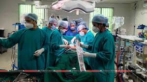

.jpg "MAP SHOWING AGARTALA GOVERNMENT MEDICAL COLLEGE")
Introduction:
Agartala Government Medical College is a government medical college located on the lap of Agartala,
the capital city of Tripura.it is at kunjaban near the Malancha Niwas,
home of the Manikya Dynasty in Agartala.
The college is attached with the college.
The college was established in 2005 and the foundation stone was laid by the Prime Minister of india,
Dr. Manmohan Singh. the college is recognised by the Medical Council of India(MCI) and is affiliated to Tripura University.
Tripura is one of the smallest state in the country located at Northeast India,
covers 10,491.69 square km. and bordered by Bangladesh to the North, South, and West.
In 15 October,
1949, the princely state merged with the Indian Union. Initially, a part 'C' state,
it became a Union territory with the reorganization of states in 1956. In 1972,
Tripura attained the status of a full-fledged state.
Tripura comes second next to Assam in-respect of population and population density among the North Eastern States of India.
As per 2011 census the state population is 36,73,917 with 18,74,376 males and 17,99,541 females.
The sex ratio of the state is 960 females per thousand males,
higher than the national ratio 940. The density of population is 350 persons per square kilometer according to Census 2011.

One of the top Government Medical College of TRIPURA
The health care infrastructure is divided into three tiers – the primary health care network, a secondary care system comprising district and sub-divisional hospitals and tertiary hospitals providing specialty and super specialty care. As on 9th June 2022 the position of Health Institutions is as mentioned below: